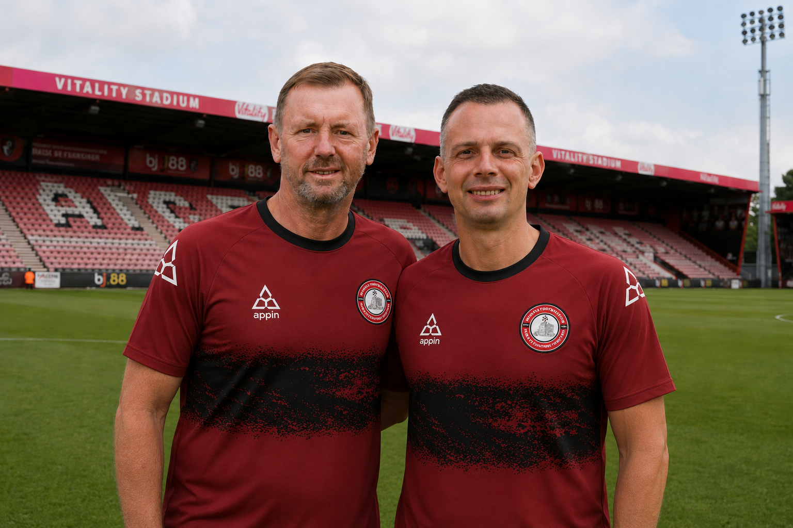

Whistle Football Club are delighted to confirm the appointment of Christian Preußer as the club’s new Head Coach ahead of the 2026/27 season.
Preußer arrives at the Vitality Stadium with an outstanding reputation for tactical organisation, player development, and progressive football. The German coach has built a strong reputation throughout his managerial career for implementing modern, high-intensity football while developing young talent within structured systems.
Joining Preußer as Assistant Head Coach will be long-term colleague Uwe Staib, with the pair reuniting following their successful work together within the SC Freiburg setup.

“We are extremely pleased to welcome Christian and Uwe to Whistle Football Club. From our very first conversations, it was clear they shared our long-term vision for the club. Their professionalism, tactical ideas, and commitment to development make them an excellent fit for Whistle FC.”
— Oliver Wilkinson, Owner & Chairman
Speaking after his appointment, Head Coach Christian Preußer expressed his excitement at joining the club.
“From the first moment I spoke with the club, I could feel the ambition and the passion behind the project. Whistle FC is a club with incredible momentum, fantastic supporters, and a clear identity. I am proud to become part of this journey.”
— Christian Preußer
Everyone at Whistle Football Club would like to warmly welcome Christian and Uwe to the Vitality Stadium.